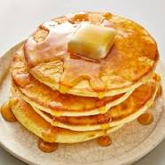

Homepage
Pancakes

Description
Tall and fluffy. These pancakes are just right.
Topped with strawberries and whipped cream, they are impossible to resist.
Ingredients
- Milk
- white vinegar
- all-purpose flour
- white sugar
- baking powder
- baking soda
- salt
- egg
- butter
- cooking spray
Steps
- Combine milk with vinegar in a medium bowl and set aside for 5 minutes
to "sour".
- Combine flour, sugar, baking powder, baking soda, and salt in a large
mixing bowl. Whisk egg and butter into "soured" milk. Pour the flour
mixture into the wet ingredients and whisk until lumps are gone.
- Heat a large skillet over medium heat, and coat with cooking spray.
Pour 1/4 cupfuls of batter onto the skillet, and cook until bubbles appear
on the surface. Flip with a spatula, and cook until browned on the other side.